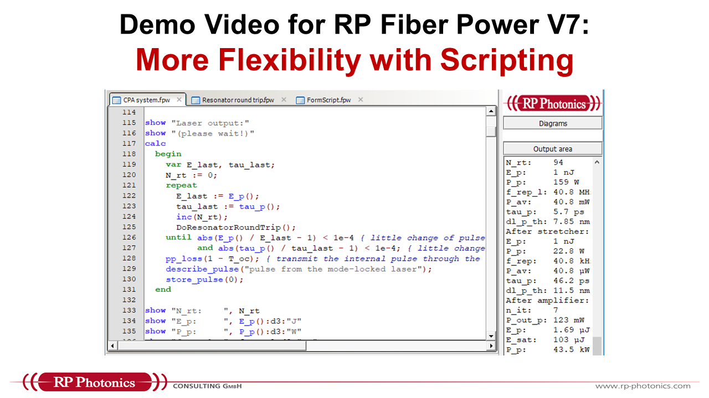
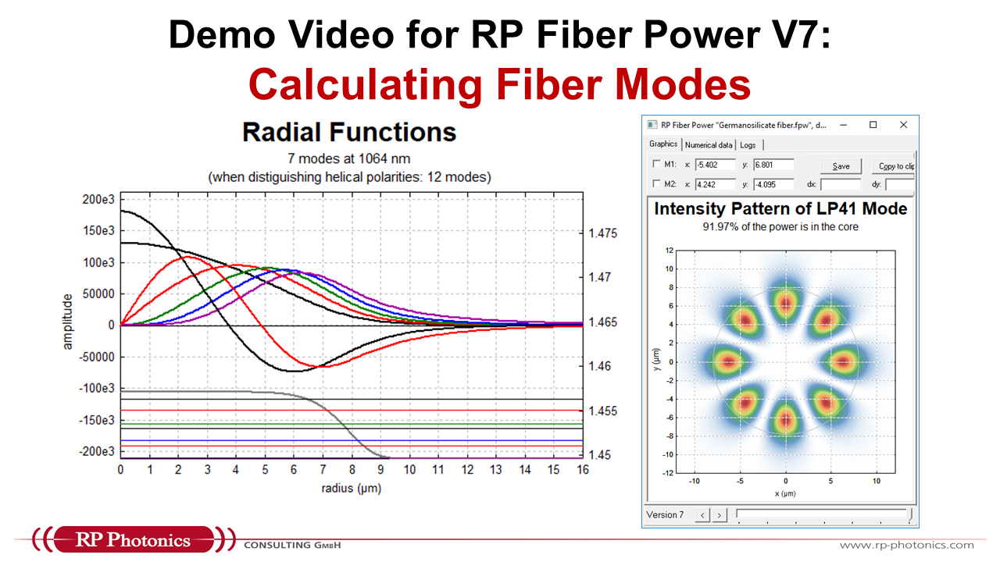
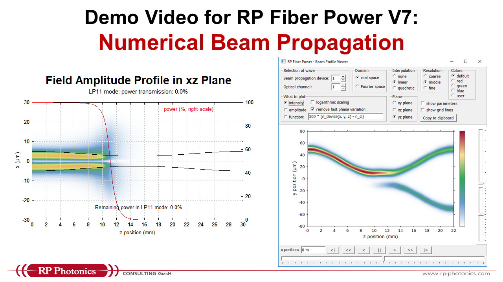
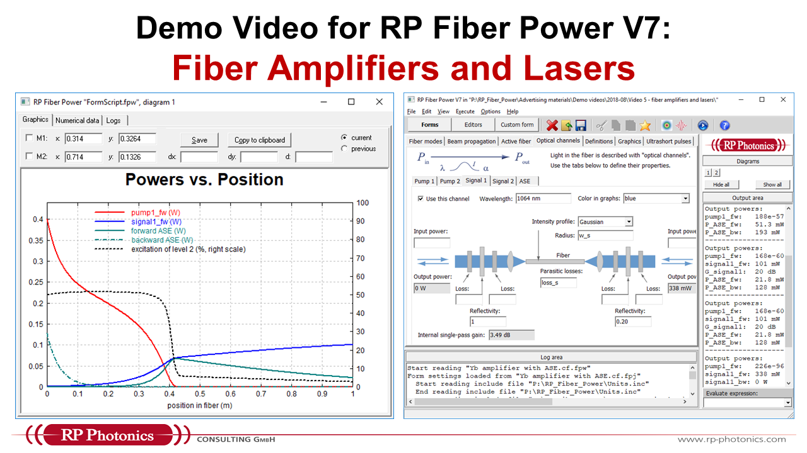

RP Fiber Power – Simulation and Design Software
Here, you find a number of video demos, various detailed demonstration case studies and various nice graphics made with the software.
Case Studies Video Demos Nice Graphics
The following video demonstrations give you a clear impression of the handling of our software.
We offer a carefully designed user interface , which gives you a quick start but also allows you to implement most sophisticated simulations.
This introductory video shows you mostly the user interface:
making simulations with simple interactive forms
use scripting, which allows for most sophisticated simulations
make custom forms for specific applications
use convenient interactive forms, e.g. the pulse display window
Simply click on the image to get that video.

This video shows
why scripting is an amazingly powerful method, which is often required for computer modeling,
how you use it in RP Fiber Power, and
how the software RP Fiber Power supports your script development with many convenient features.

This video shows
how mode properties can be calculated in RP Fiber Power with convenient predefined forms,
how one can do such things with scripts, which give far more flexibility, and
why that flexibilität is often essential in practical applications.

This video shows
how a tapered fiber can be analyzed with a convenient demo script, containing a custom form,
how to do similar things for a directional fiber coupler,
and how much flexibility we have for such investigations due to the script language.

This video shows
how to start amplifier modeling with the interactive forms or alternatively with a custom form,
how one can easily adapt a custom form to one's own needs,
how one quickly encounters surprising physical aspects of such systems,
and that playing with such a model helps greatly for acquiring a comprehensive understanding.
These videos can also be found on YouTube .